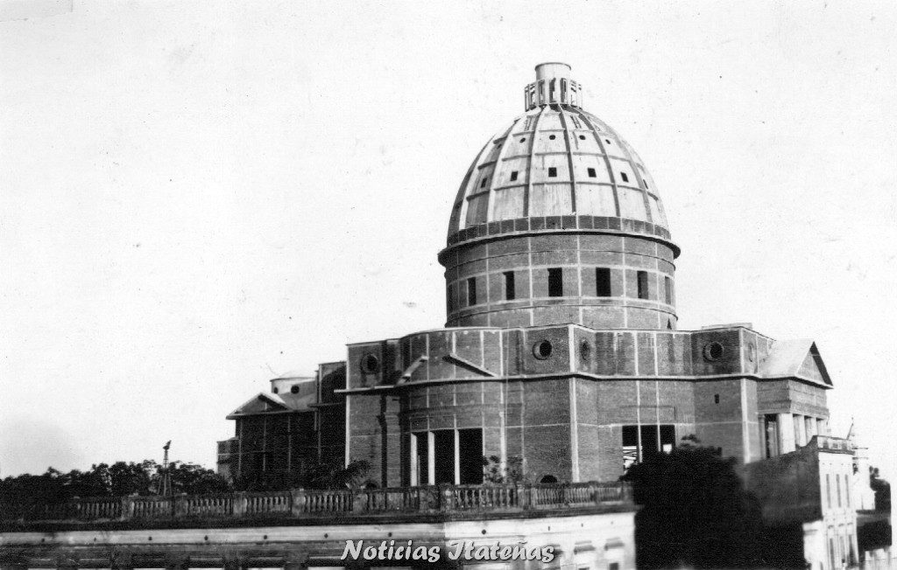
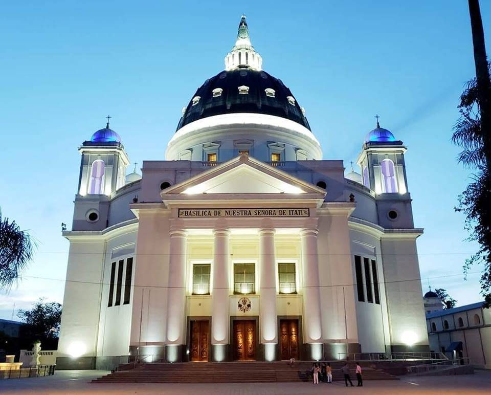
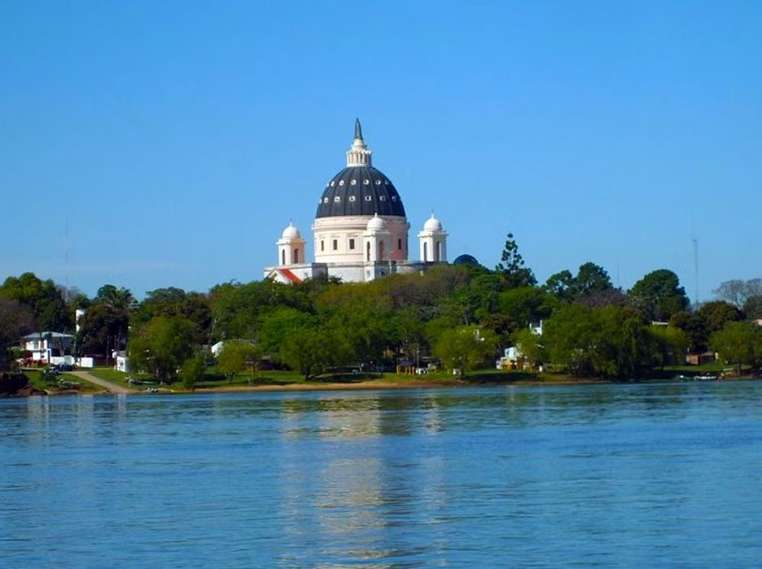

Historia del Santuario

El origen del santuario se remonta a la capilla de paja y adobe que los misioneros franciscanos levantaron hacia 1615 en el barranco guaraní que daba al Paraná. Esta primera construcción fue sustituida varias veces a lo largo de los siglos XVII y XVIII, siempre por estructuras más firmes pero igualmente modestas, a medida que la comunidad de Itatí crecía y su devoción mariana se consolidaba como elemento central de la identidad local.
El impulso decisivo para la construcción de un santuario de mayor envergadura llegó a fines del siglo XIX, cuando la devoción a la Virgen de Itatí había adquirido ya dimensiones regionales. El obispado de Corrientes, fundado en 1895, asumió como primera misión la edificación de una basílica digna de la advocación más amada de la provincia. Las obras comenzaron en 1900, en el mismo año en que el Papa León XIII otorgó la Coronación Canónica a la imagen, y se prolongaron durante las cuatro primeras décadas del siglo XX.
En 1943, el Papa Pío XII elevó el templo a la dignidad de Basílica Menor, distinción pontificia que reconoce la importancia histórica y devocional del santuario dentro de la Iglesia universal. A partir de entonces, la basílica de Itatí goza de los privilegios propios de este título: el umbela y la tintinnabulum —los atributos ceremoniales de las basílicas— se exhiben en su interior como signos de la comunión especial que une este santuario argentino con la Sede de Pedro.
Arquitectura de la Basílica

La Basílica Santuario de Nuestra Señora de Itatí es una obra arquitectónica de estilo neogótico, corriente que dominó la arquitectura religiosa argentina de fines del siglo XIX y comienzos del XX. Su fachada principal está flanqueada por dos torres de piedra caliza que se elevan hasta aproximadamente 75 metros de altura, convirtiéndose en el punto de referencia visual más icónico de la ciudad de Itatí y del horizonte sobre el Paraná. Estas torres, rematadas en agujas con pináculos, pueden divisarse desde la ruta nacional que corre paralela al río, anunciando la cercanía del lugar sagrado a los peregrinos que llegan por tierra.
El interior del templo es de planta de cruz latina con tres naves, una central más ancha y elevada y dos laterales. La nave central está cubierta por una bóveda de crucería que dirige la mirada hacia el altar mayor, donde se venera la imagen original de la Virgen. La luz entra a través de vitrales policromados que narran episodios de la historia de la devoción itateña y escenas del Nuevo Testamento, tiñendo el espacio interior con una atmósfera de recogimiento y belleza.
El altar mayor, de mármol italiano blanco con incrustaciones de jaspe y alabastro, fue donado a principios del siglo XX por la comunidad italiana de Corrientes. Sobre él se levanta un camarín de gran riqueza ornamental donde se expone la imagen de la Virgen, ataviada con los mantos y joyas de la devoción popular. La sacristía conserva una colección de exvotos —pinturas votivas, objetos personales, placas de agradecimiento— que constituyen un testimonio vivo de siglos de fe itateña.
— Oración popular de los peregrinos de Corrientes
La Visita de Juan Pablo II (1987)
El 7 de abril de 1987, el Papa Juan Pablo II pisó la tierra correntina en un acto que quedó grabado en la memoria colectiva de la región. Era el tercer día de su primera visita pastoral a la Argentina, que lo llevó también a Buenos Aires, Córdoba y otras ciudades del país. La elección de Itatí como destino de peregrinación del Sumo Pontífice no fue casual: fue un gesto deliberado de la Santa Sede para reconocer la profunda raigambre mariana del pueblo del Litoral.
La multitud que lo esperaba en Itatí y sus alrededores fue estimada en más de 400.000 personas, desbordando todos los espacios disponibles en la pequeña ciudad y a lo largo de los caminos de acceso. Juan Pablo II llegó en helicóptero y descendió sobre la explanada del santuario, donde fue recibido por las autoridades eclesiásticas de Corrientes y una representación de la comunidad guaraní de la región. Al entrar en la basílica, se postró en oración ante la imagen de la Virgen durante varios minutos en un gesto de profundo recogimiento.
En su homilía, el Papa habló de la Virgen de Itatí como "signo de la presencia materna de María en medio de este pueblo que lleva impresa en su alma la huella de dos grandes civilizaciones: la indígena y la cristiana". Pidió a los fieles que conservaran esa herencia y la transmitieran a las generaciones futuras. Al concluir la celebración, bendijo una imagen que fue obsequiada al santuario y que hoy se expone en uno de los altares laterales de la basílica como recuerdo permanente de la visita pontificia.
El Entorno: Ciudad de Itatí y el Paraná

La ciudad de Itatí se asoma al río Paraná desde un barranco de tierra rojiza y arcilla blanca —la misma roca que le dio su nombre guaraní— a 84 kilómetros al norte de la capital correntina. Con poco más de 8.000 habitantes permanentes, es una localidad pequeña cuya existencia gira enteramente en torno al santuario. La economía local se sostiene en el turismo religioso: los comercios de artículos religiosos, hospedajes, parrillas y puestos de artesanías guaraníes que bordean las calles que conducen a la basílica son la columna vertebral del sustento de sus vecinos.
El Paraná, el segundo río más largo de Sudamérica, es una presencia permanente y casi sagrada en la espiritualidad itateña. Los pescadores y navegantes del Litoral que encomiendan sus travesías a la Virgencita de Itatí tienen en la combinación del río y el santuario el eje de su universo simbólico: el agua que da vida y peligro, y la Madre que protege sobre ambas orillas. Muchos peregrinos llegan al santuario en lancha o en bote desde las islas del Paraná y de la provincia de Entre Ríos, añadiendo a la peregrinación la dimensión poética de un viaje fluvial.
El paisaje que rodea el santuario es el de la llanura correntina con sus esteros, palmeras yatay y el cielo inmenso del nordeste. En los meses de peregrinación, el borde del Paraná se ilumina de noche con las velas de los fieles que rezan a orillas del agua, en una escena que mezcla lo sagrado y lo natural de una manera que ningún templo construido podría superar.
Cómo Peregrinar al Santuario
Por tierra: La ciudad de Itatí se encuentra a 84 km al norte de Corrientes capital por la Ruta Nacional 12. Desde Resistencia (Chaco) son aproximadamente 120 km. Hay servicio de micros regulares desde la terminal de ómnibus de Corrientes capital. También se puede acceder desde otras localidades del nordeste argentino por la red de rutas provinciales que atraviesan el corazón de Corrientes.
Por río: Los peregrinos de las islas del Paraná y de la costa entrerriana llegan en embarcaciones propias o en los servicios fluviales que aumentan su frecuencia durante las fiestas patronales. El acceso fluvial refuerza el vínculo histórico entre el santuario y los pueblos ribereños que siempre encontraron en la Virgen de Itatí a su intercesora ante las aguas del Paraná.
A pie: La peregrinación caminando desde Corrientes capital hasta Itatí (84 km) es una de las más practicadas del nordeste argentino. Grupos organizados y peregrinos individuales parten de Corrientes en los días previos a la fiesta del 16 de julio, caminando de noche para evitar el calor del verano austral. En el camino, capillas y familias correntinas ofrecen agua, alimento y descanso a los caminantes.
La fiesta patronal: El momento álgido de la peregrinación es el 16 de julio, fiesta de Nuestra Señora de Itatí. La jornada incluye misas solemnes desde la madrugada, procesión de la imagen por las calles del pueblo, actos culturales guaraníes y el reencuentro multitudinario de familias de toda la región que hacen de la fiesta un acontecimiento a la vez religioso, cultural y familiar.
Seguí explorando la Virgen de Itatí
Este artículo forma parte de una serie completa sobre la advocación itateña:
Artículo Principal
Historia y origen de la advocación, el nombre guaraní y la devoción popular.
Ir al hub →El Patronazgo
Por qué la Virgen de Itatí es patrona de Corrientes y del Litoral argentino.
Leer artículo →Oraciones
Las oraciones tradicionales, novena y jaculatorias a la Virgen de Itatí.
Rezar →Arte e Iconografía
La imagen original, sus mantos y el arte devocional hispano-guaraní.
Ver artículo →